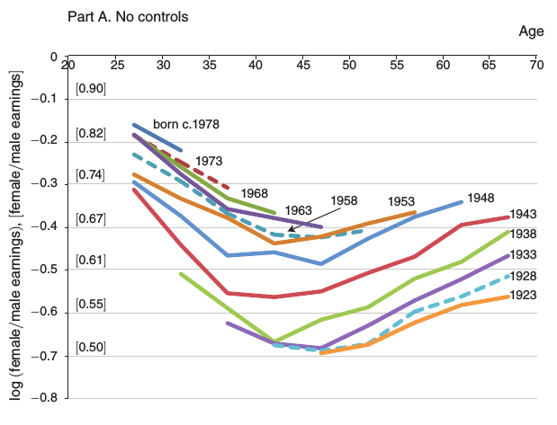
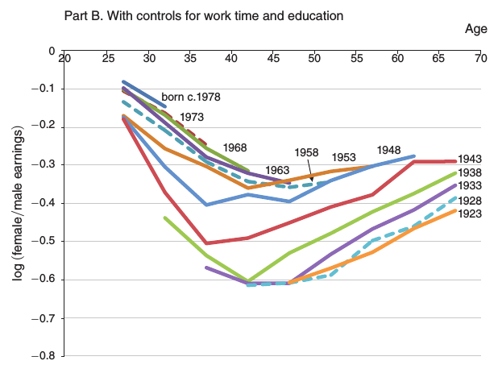
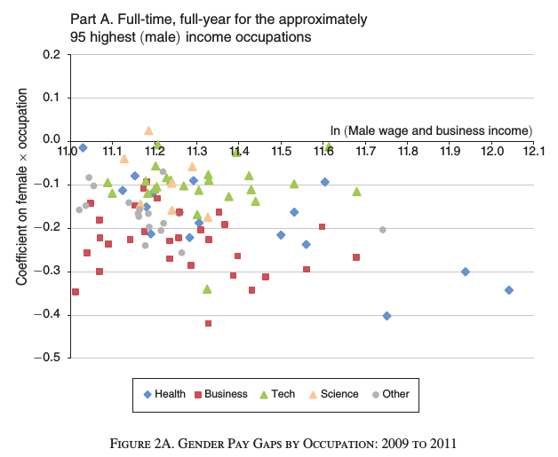
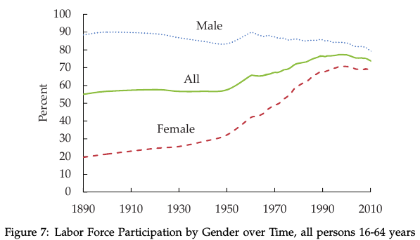
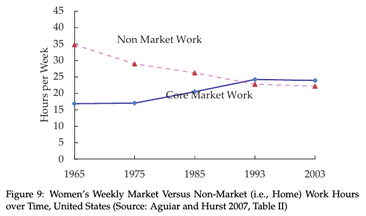

We find that ban-the-box policies decrease the probability of being employed by 3.4 percentage points (5.1%) for young, low-skilled black men, and by 2.3 percentage points (2.9%) for young, low-skilled Hispanic men. These findings support the hypothesis that when an applicant’s criminal history is unavailable, employers statistically discriminate against demographic groups that include more ex-offenders.




